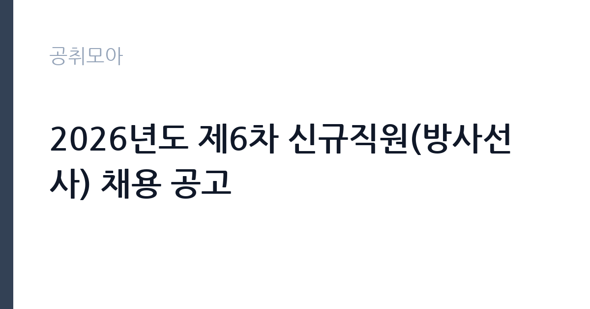

[공공기관] 2026년도 제6차 신규직원(방사선사) 채용 공고
경북대학교치과병원 · 대구 · 마감 2026-11-11 (D-14) · 출처 잡알리오

한눈에 보는 모집 조건
| 기관 | 경북대학교치과병원 |
|---|---|
| 공고명 | 2026년도 제6차 신규직원(방사선사) 채용 공고 |
| 고용형태 | 정규직 |
| 근무지 | 대구 |
| 게시일 | 2026-10-28 |
| 마감일 | 2026-11-11 (D-14) |
지원자격, 이렇게 읽으세요
- 방사선사 면허증 소지자
- 공인영어성적(토익 600점 이상 또는 이에 준하는 공인어학성적 소지자)
- ※ 위 2가지 응시자격을 모두 충족하여야 함
정규직 채용은 기간의 정함이 없는 근로계약을 전제로 합니다. 수습 기간을 두고 평가한 뒤 정규직으로 확정하는 절차가 일반적이며 기관의 인사 규정과 임금 체계를 적용받습니다. 이번 공고는 경북대학교치과병원에서 직접 진행하는 자체 전형으로, 응시자격과 제출서류는 공고문에 항목별로 제시됩니다. 방사선사는 방사선사 면허가 필수이며, 면허 취득 예정자로 지원할 수 있는지는 공고문의 별도 조항으로 정해집니다. 이 공고처럼 공인영어성적 최저 기준을 함께 두는 경우가 있으므로 두 요건을 동시에 확인해야 합니다. 치과 영상 장비 운용 경험이나 병원 근무 경력은 우대 사항으로 붙는 경우가 많습니다. 채용 후에는 결격사유 조회와 채용 신체검사, 방사선 관계 종사자 건강진단 절차가 이어집니다. 서류는 접수 마감 이후 보완이 되지 않으므로 자격 요건과 증빙 서류를 마감 전에 모두 갖춰야 합니다. 공고문에 명시된 우대 사항은 해당 여부를 확인해 증빙을 첨부해야 가점이 반영됩니다. 자격 취득 예정자는 채용 공고의 예정자 허용 조항을 먼저 확인해야 합니다. 조항이 없으면 지원 자체가 반려될 수 있습니다. 이 공고 원문에 적힌 응시 조건 문구는 '방사선사 면허증 소지자' / '공인영어성적(토익 600점 이상 또는 이에 준하는 공인어학성적 소지자)' / '※ 위 2가지 응시자격을 모두 충족하여야 함'입니다. 문구를 그대로 읽고 본인 해당 여부를 하나씩 표시해 두면 서류 단계에서 탈락하는 일을 줄일 수 있습니다.
이 공고의 포인트
이 공고의 첫 번째 포인트는 고용 형태입니다. 수습 기간 평가를 통과하면 기간의 정함이 없는 신분이 되어 고용이 안정됩니다. 두 번째는 업무 범위가 명확하다는 점입니다. 방사선사(영상의학) 직무로 채용되므로 배치 이후 담당 업무가 크게 흔들리지 않습니다. 세 번째는 근무지입니다. 대구 지역 근무로 수도권 공고에 비해 지원자 분포가 넓지 않아 상대적으로 경쟁이 분산되는 경우가 있습니다. 채용 규모가 크지 않아 면접 비중이 높은 전형이 될 가능성이 있습니다. 선발 인원은 공고문에 명시되어 있으니 모집분야 항목을 함께 확인하십시오.
전형은 어떻게 진행되나
채용 절차는 공고문에 안내된 순서대로 진행되며, 서류 접수 마감 후에는 추가 접수나 서류 보완이 이뤄지지 않는 것이 원칙입니다. 서류심사에서는 응시자격과 제출서류의 형식 요건을 기계적으로 확인하므로, 경력 증명서의 기간과 직무 내용이 공고의 요건과 정확히 맞아야 합니다. 면접은 지원자 수에 따라 집단면접과 개별면접으로 나뉘고, 직무 관련 질문과 상황 대응 질문이 함께 나옵니다. 합격자 발표는 개별 통보 또는 홈페이지 게시로 이뤄지며 이후 임용 절차가 진행됩니다. 경력 증명서에 직무 내용이 적혀 있지 않으면 인정받지 못할 수 있으므로 상세 기재를 요청하십시오.
원문에서 확인한 전형 방식
가. 방사선사 면허증 소지자 나. 공인영어성적(토익 600점 이상 또는 이에 준하는 공인어학성적 소지자) ※ 위 2가지 응시자격을 모두 충족하여야 함
이런 분께 추천해요
- 방사선사 면허를 보유한 분
- 공인영어성적 기준을 함께 충족하는 분
- 치과·병원 영상 촬영 경험이 있는 분
지원 전 체크리스트
- 응시자격 요건과 경력 기준을 충족하는가 — 경력은 증명서로 입증해야 합니다
- 수습 기간과 정규직 전환 조건을 확인했는가
- 제출서류 목록을 모두 준비했는가 — 누락 시 서류 단계에서 탈락합니다
- 접수 마감 2026-11-11 이전에 접수 방식을 확인해 제출했는가
모집 일정과 제출 타이밍
접수 마감은 2026-11-11이고 공고는 2026-10-28에 게시되었습니다. 준비 기간 14일 안에 서류 작성, 증빙 발급, 접수를 모두 마쳐야 하므로 주말을 포함해 일정을 미리 나누는 것이 좋습니다. 특히 경력 기술서나 직무수행계획서를 요구하는 공고는 작성에 시간이 걸리므로 첫날 초안을 잡으십시오. 서류 합격자 발표와 면접 사이 간격이 짧은 경우가 많아 면접 예상 질문은 서류 제출 전에 정리해 두는 편이 유리합니다. 마감 직전에는 접속이 몰리므로 여유를 두고 제출하십시오. 공휴일이 끼어 있으면 증명서 발급이 늦어질 수 있으니 발급 일정을 앞당기십시오. 대구 근무지는 도심 접근성이 좋은 편이지만 시설에 따라 외곽 배치가 있을 수 있습니다. 마감까지 2주 안팎이 있어 준비할 시간은 있지만 미루면 촉박해집니다. 선발 인원은 공고문의 모집분야 항목에 직종별로 제시되어 있습니다.
직무 이해하기: 공공기관
교육기관은 학교 교육과 교원 연수, 교육 행정을 담당합니다. 교육청은 관내 학교를 지원하고, 대학은 학사와 연구, 학생 지원 업무를 운영합니다. 예산과 인사 규정이 교육부 지침과 자체 규정을 함께 따르므로 절차가 엄격합니다. 방사선사 업무는 진단 영상을 촬영하고 판독이 가능한 상태로 만드는 일입니다. 촬영 전 환자에게 검사 절차와 주의사항을 설명하고, 촬영 부위에 맞춰 자세를 잡아 준 뒤 촬영 조건을 설정합니다. 치과병원이라면 파노라마·CT·구내 촬영이 중심이 되고, 촬영한 영상은 판독 시스템에 올려 진료과에 전달합니다. 장비의 정도 관리와 필름·센서 등 소모품 관리, 피폭선량 기록도 함께 맡습니다. 임신 가능성이 있는 환자나 소아 환자의 촬영에서는 방어복 착용과 피폭 최소화 조치를 먼저 확인해야 합니다. 업무는 혼자 처리하기보다 부서 단위로 나눠 진행되므로 담당 구역과 협업 범위를 입사 초에 확인하는 것이 중요합니다. 현장 업무와 사무 업무의 비중은 기관의 사업 일정에 따라 계절별로 달라집니다.
자기소개서 작성 팁
지원서는 면허와 촬영 실적을 앞세우는 것이 효과적입니다. 담당했던 촬영 종류와 일평균 촬영 건수, 재촬영률을 낮춘 경험을 수치로 제시하십시오. 환자 응대에서 갈등을 줄인 사례, 장비 점검 루틴을 문서화한 경험도 좋은 소재입니다. 공인영어성적은 서류 단계에서 확인되므로 점수와 취득일을 정확히 기재하고, 진료 지원이 목적이라는 점을 분명히 밝히십시오. 문항별 글자 수 제한을 먼저 확인하고, 각 문항의 첫 문장에 결론을 배치하는 방식이 읽기 쉽습니다. 지원 동기는 기관의 어떤 사업에 기여하겠다는 한 문장으로 시작하고, 이어서 본인의 경험을 근거로 붙이십시오. 감점을 피하려면 다른 기관에 보낼 수 있는 범용 문장을 그대로 쓰지 않는 것이 중요합니다. 기관 이름과 사업명이 문장 안에 자연스럽게 들어가야 준비도가 드러납니다.
면접 준비 포인트
면접에서는 촬영 자세 유도와 환자 응대 방식을 확인합니다. 촬영이 어려운 환자(구역 반사가 심한 환자, 소아, 거동이 불편한 환자)를 어떻게 설득하고 재촬영을 줄일지 묻는 질문이 나옵니다. 장비 이상을 발견했을 때의 조치 순서, 피폭 관리 수칙을 어디까지 알고 있는지도 평가 대상입니다. 판독 결과가 늦어져 진료 일정이 밀릴 때 어떻게 조율했는지 구체적으로 답하십시오. 답변은 상황, 판단, 조치의 순서로 정리하면 전달이 분명해집니다. 모르는 질문에는 모른다고 밝히고 확인 방법을 제시하는 편이 억지 답변보다 낫습니다. 마지막에는 근무 의사와 함께 2026-11-11 이후 일정에 언제든 응할 수 있다는 점을 전달하십시오. 직무 특성상 체력이나 근무 시간에 대한 질문이 나올 수 있으므로 솔직하게 답하고 관리 계획을 함께 제시하십시오.
급여·근무조건 읽는 법
알리오(공공기관 경영정보 공개시스템) 2025년 결산 경영공시 기준으로 경북대학교치과병원 일반정규직 1인당 평균보수액은 6,717만원, 공시된 신입사원 초임은 4,451만원입니다. 평균보수액은 기본급에 고정수당·실적수당·성과상여금·급여성 복리후생비를 모두 합산한 값이라 월 기본급만 보고 판단하면 실제와 크게 어긋납니다. 정규직 신입의 경우 공시된 신입사원 초임이 출발점이 되고, 이후 호봉과 성과급에 따라 평균보수에 접근합니다. 방사선사 보수는 병원 임금 규정에 따라 기본급과 각종 수당으로 구성되며, 야간·당직·특수근무 수당이 붙는 경우가 있습니다. 면허 수당과 근속 수당 항목이 별도로 운영되는 곳도 있어 처우표를 항목별로 확인해야 합니다. 2026년 적용 최저임금은 시급 10,320원, 월 환산 2,156,880원(주 40시간·209시간 기준)입니다. 고용노동부 고시 제2025-47호로 확정된 금액입니다. 공고문에 금액이 제시되지 않은 항목은 원문 보수표나 처우 설명에서 확인해야 하며 확인되지 않은 수치는 쓰지 않는 것이 원칙입니다. 비교할 때는 월 급여뿐 아니라 상여·명절휴가비·복지포인트·초과근무수당까지 포함한 연간 총액으로 계산하십시오. 기간제라면 계약 기간 동안의 총액을, 무기계약이라면 호봉 상승과 정년까지의 누적 소득을 기준으로 판단하는 편이 정확합니다.
자주 묻는 질문
- 선발 인원은 몇 명인가요?
공고문의 모집분야 항목에 직종별 인원이 표로 제시되어 있습니다. 첨부된 공고문 원문에서 확인하십시오. - 근무지는 어디인가요?
대구 지역의 경북대학교치과병원 소속 근무지입니다. 세부 주소와 출퇴근 조건은 원문 공고문에서 확인할 수 있습니다. - 보수는 얼마인가요?
채용 신분(정규직)과 기관 임금 규정에 따라 정해지며 구체적인 금액은 공고문 처우 항목에 제시됩니다. 금액이 공개되지 않은 경우에는 원문의 보수표를 확인하십시오.
함께 보면 좋은 공고
[공공기관] 2026년 제2차 국외소재문화유산재단 직원 채용(6급, 임시계약직 사업A/사업B) — 마감 2026-11-09[공공기관] 한국농어촌공사 금강사업단(보훈/장애제한경쟁) 공무직(청소원) 채용 — 마감 2026-11-13[공공기관] 분당서울대학교병원 진료교수요원(핵의학과) 채용공고 — 마감 2026-11-09출처: 잡알리오 공개정보를 바탕으로 공취모아가 정리한 안내글입니다. 모집 조건·일정은 변경될 수 있으니 지원 전 반드시 원문 공고문을 확인하세요. 본 글은 정보 제공용이며 합격을 보장하지 않습니다.